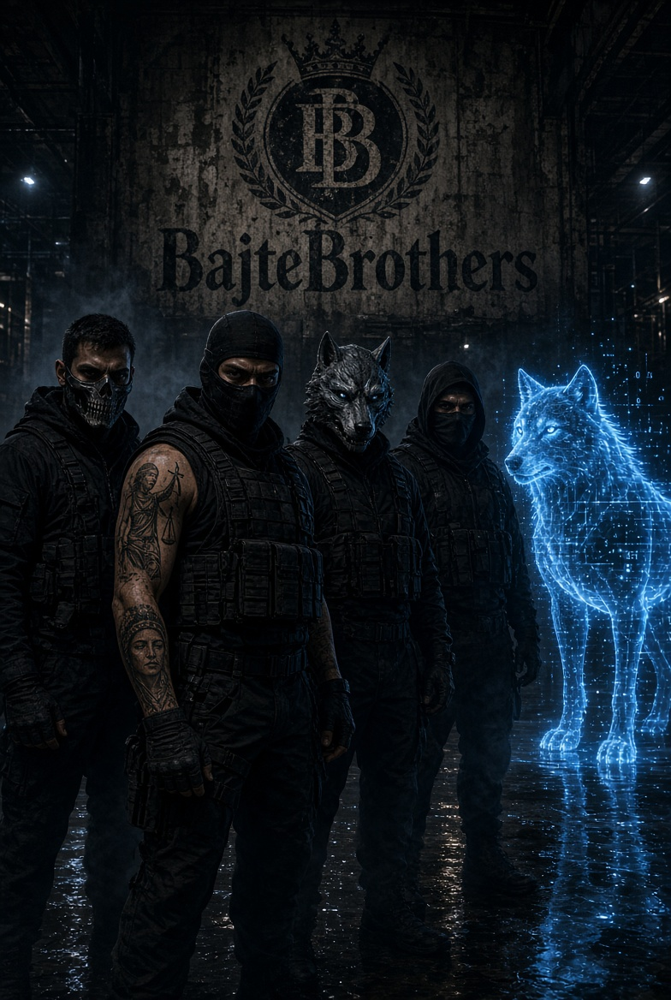
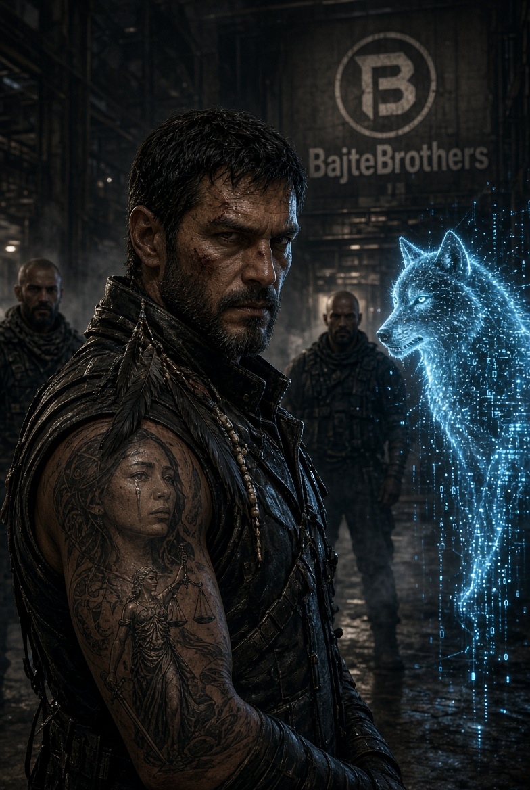

Tekst razdvaja podatke iz službenih dokumenata, javno iznesene navode i otvorena pitanja. Ne tvrdi da su utvrđeni kazneno djelo, korupcija ili namjerno onečišćenje. Evidencijska matrica je sekundarni indeks autora dosjea; gdje je moguće, treba provjeriti izvorni akt, podatke i metodologiju.
Što dokumenti i indeks bilježe
- Studija i planirana oporaba otpada: E-056 navodi cjelovitu Studiju utjecaja na okoliš od 801 stranice, s opisom projektiranog doziranja goriva iz otpada do 4 t/h kroz glavni gorionik i 15 t/h kroz pretkalcinator. Navodi i dozvolu za pokusni rad R1/R13 za neopasni otpad KB 19 12 10, KLASA UP/I-351-04/24-09/7, URBROJ 517-04-2-1-25-8, izdanu 14.03.2025. To opisuje plan i dozvolu, a ne dokazuje stvarno korištenje kapaciteta ili kršenje uvjeta.
- Javno sudjelovanje: E-060 bilježi službenu obavijest o javnoj raspravi od 17.08. do 16.09.2026., KLASA UP/I-351-03/25-08/46, i javno izlaganje najavljeno za 03.09.2026. E-044 sažima medijski izvještaj o povlačenju zahtjeva i obustavi postupka 28.08.2026. Za zaključak o postupku treba provjeriti izvorno rješenje i službeno izvješće o raspravi te obradu zaprimljenih primjedbi.
- Stav lokalnog vijeća: E-105 bilježi jednoglasan zaključak Općinskog vijeća Raše (11/11) protiv projekta. To potvrđuje politički stav vijeća, a ne nezakonitost projekta ili dozvole.
- Provjerljivost mjerenja: E-122 opisuje API zapis mobilne postaje u Koromačnu s negativnim vrijednostima NO. To opravdava provjeru sirovih mjerenja, kalibracije, obrade i kontrole kvalitete. Sam zapis ne dokazuje uzrok anomalije, prekoračenje emisija ni kvar cijelog sustava.
Što ostaje otvoreno
E-039/E-041 opisuju navod/opažanje da dio polusatnih podataka nije bio vidljiv na javnoj stranici u određenom razdoblju. Bez sirovih podataka i zapisa objave ne može se utvrditi razlog nedostupnosti niti zaključiti da su mjerenja bila prekinuta.
Navod o 148 prekoračenja TOC-a u E-006/E-058 nije popraćen izvornim AMS vrijednostima u evidencijskoj bilješci, pa ga ovdje ne predstavljamo kao potvrđenu činjenicu. Ne zaključujemo ni da je otpad iz Gospića zaprimljen ili spaljen u Koromačnu; za to su potrebni primarni zapisi o pošiljkama, vaganju, šiframa otpada i primateljima.
Što tražimo od nadležnih tijela
- Objavu izvornog rješenja o obustavi, izvješća o javnoj raspravi i evidencije zaprimljenih primjedbi.
- Pristup sirovim AMS/CEMS podacima, zapisima objave i prekida, kalibracijskim i servisnim zapisima te pravilima validacije.
- Neovisnu provjeru negativnih vrijednosti NO i objašnjenje njihove obrade prije uključivanja u agregirane pokazatelje.
- Objavu važećih dozvola i uvjeta te usporedbu odobrenih aktivnosti sa Studijom i primjenjivim BAT zaključcima.
- Ako se istražuje mogući tok otpada iz Gospića, prikaz primarnih zapisa za svaku pošiljku umjesto zaključivanja iz posrednih navoda.
SHA-256 otisak može pomoći provjeriti jesu li dvije kopije datoteke jednake; sam po sebi ne potvrđuje istinitost sadržaja ni zaključaka.
Izvori i evidencijski trag


Dieser Text unterscheidet Angaben aus amtlichen Unterlagen, öffentliche Behauptungen und offene Fragen. Er behauptet nicht, dass Straftaten, Korruption oder vorsätzliche Umweltverschmutzung festgestellt wurden. Die Evidenzmatrix ist ein von den Dossierautoren erstellter Sekundärindex; soweit möglich, sind Originalbescheide, Daten und Methoden zu prüfen.
Was Unterlagen und Index festhalten
- Studie und geplante Abfallverwertung: E-056 nennt eine 801-seitige Umweltverträglichkeitsstudie und eine geplante Zufuhr von Abfallbrennstoff mit bis zu 4 t/h über den Hauptbrenner und 15 t/h über den Kalzinator. Außerdem wird eine Genehmigung für den Probebetrieb R1/R13 für nicht gefährlichen Abfall mit Schlüssel 19 12 10 aufgeführt, KLASA UP/I-351-04/24-09/7, URBROJ 517-04-2-1-25-8, ausgestellt am 14.03.2025. Das beschreibt Planung und Genehmigung, nicht die tatsächliche Nutzung oder einen Auflagenverstoß.
- Öffentliche Beteiligung: E-060 dokumentiert eine amtliche Bekanntmachung der Konsultation vom 17.08. bis 16.09.2026, KLASA UP/I-351-03/25-08/46, und eine für den 03.09.2026 angekündigte Veranstaltung. E-044 fasst einen Medienbericht über den Rückzug des Antrags und die Einstellung des Verfahrens am 28.08.2026 zusammen. Zu prüfen sind der originale Bescheid, der offizielle Konsultationsbericht und die Behandlung der Stellungnahmen.
- Position des Gemeinderats: E-105 verzeichnet einen einstimmigen Beschluss des Gemeinderats Raša (11 von 11 Stimmen) gegen das Projekt. Das belegt die politische Position, nicht die Rechtswidrigkeit des Projekts oder einer Genehmigung.
- Überprüfbarkeit der Messungen: E-122 beschreibt einen API-Datensatz der mobilen Station in Koromačno mit negativen NO-Werten. Das rechtfertigt eine Prüfung der Rohmessungen, Kalibrierung, Verarbeitung und Qualitätskontrolle. Für sich genommen belegt es weder die Ursache noch Grenzwertüberschreitungen oder einen Ausfall des Gesamtsystems.
Was offen bleibt
E-039/E-041 beschreiben die zeitweise Nichtverfügbarkeit bestimmter öffentlich dargestellter Halbstundenwerte als zeitlich begrenzte Behauptung/Beobachtung. Ohne Rohdaten und Veröffentlichungsprotokolle lässt sich weder der Grund noch eine Unterbrechung der Messung feststellen.
Die Behauptung von 148 TOC-Überschreitungen in E-006/E-058 ist laut Evidenzvermerk nicht durch originale AMS-Werte belegt und wird hier nicht als bestätigt dargestellt. Ebenso wird nicht behauptet, Abfälle aus Gospić seien in Koromačno angenommen oder verbrannt worden; dafür wären Primärdaten zu Sendungen, Verwiegung, Abfallschlüsseln und Empfängern nötig.
Fragen an die zuständigen Behörden
- Den originalen Einstellungsbescheid, den Konsultationsbericht und das Verzeichnis der eingegangenen Stellungnahmen veröffentlichen.
- Zugang zu AMS/CEMS-Rohdaten, Veröffentlichungs- und Ausfallprotokollen, Kalibrierungs- und Wartungsnachweisen sowie Validierungsregeln ermöglichen.
- Negative NO-Werte unabhängig prüfen und ihre Verarbeitung vor der Aufnahme in aggregierte Kennzahlen erläutern.
- Geltende Genehmigungen und Auflagen veröffentlichen und mit der Studie sowie einschlägigen BAT-Schlussfolgerungen vergleichen.
- Bei einer Untersuchung möglicher Abfalltransporte aus Gospić Primärnachweise für jede Sendung vorlegen.
Ein SHA-256-Fingerabdruck kann die Identität zweier Dateikopien vergleichen; er bestätigt nicht die Wahrheit des Inhalts oder der Schlussfolgerungen.
Quellen und Nachweisübersicht
Questo testo distingue i dati contenuti in documenti ufficiali, le dichiarazioni pubbliche e le questioni aperte. Non afferma che siano stati accertati reati, corruzione o inquinamento intenzionale. La matrice delle prove è un indice secondario compilato dagli autori del dossier; ove possibile, vanno verificati gli atti originali, i dati e i metodi.
Cosa riportano i documenti e l’indice
- Studio e recupero dei rifiuti previsto: E-056 indica uno Studio di impatto ambientale di 801 pagine e il sistema previsto per l’alimentazione di combustibile da rifiuti: fino a 4 t/h tramite il bruciatore principale e 15 t/h tramite il precalcinatore. Riporta anche un’autorizzazione per l’esercizio di prova R1/R13 per rifiuti non pericolosi, codice 19 12 10, KLASA UP/I-351-04/24-09/7, URBROJ 517-04-2-1-25-8, del 14.03.2025. Descrive piano e autorizzazione, non l’uso effettivo o una violazione delle condizioni.
- Partecipazione pubblica: E-060 registra un avviso ufficiale di consultazione dal 17.08 al 16.09.2026, KLASA UP/I-351-03/25-08/46, e un incontro previsto per il 03.09.2026. E-044 riassume un articolo di stampa sul ritiro della richiesta e la chiusura del procedimento il 28.08.2026. Occorre verificare il provvedimento originale, la relazione ufficiale e il trattamento delle osservazioni.
- Posizione del Consiglio comunale: E-105 registra una decisione unanime del Consiglio comunale di Raša (11 voti su 11) contraria al progetto. Documenta una posizione politica, non l’illegittimità del progetto o dell’autorizzazione.
- Verificabilità delle misurazioni: E-122 descrive un dato API della stazione mobile di Koromačno con valori negativi di NO. Ciò giustifica una verifica dei dati grezzi, della calibrazione, dell’elaborazione e del controllo di qualità. Da solo non dimostra la causa, il superamento dei limiti o un guasto dell’intero sistema.
Cosa resta da chiarire
E-039/E-041 descrivono la temporanea indisponibilità di alcuni valori semiorari pubblicati come affermazione/osservazione circoscritta nel tempo. Senza dati grezzi e registri di pubblicazione non si può stabilire il motivo né concludere che le misurazioni siano state interrotte.
L’affermazione di 148 superamenti del TOC in E-006/E-058 non è supportata, secondo la nota probatoria, dai valori AMS originali e non è presentata qui come fatto confermato. Non si afferma neppure che rifiuti da Gospić siano stati ricevuti o bruciati a Koromačno: servono registrazioni primarie di spedizioni, pesature, codici dei rifiuti e destinatari.
Richieste alle autorità competenti
- Pubblicare il provvedimento originale di chiusura, la relazione della consultazione e il registro delle osservazioni ricevute.
- Consentire l’accesso ai dati grezzi AMS/CEMS, ai registri di pubblicazione e interruzione, ai documenti di calibrazione e manutenzione e alle regole di validazione.
- Verificare indipendentemente i valori negativi di NO e spiegare come sono stati elaborati prima dell’inclusione negli indicatori aggregati.
- Pubblicare autorizzazioni e condizioni applicabili e confrontarle con lo Studio e le pertinenti conclusioni BAT.
- Se si indaga un possibile flusso di rifiuti da Gospić, presentare registrazioni primarie per ogni spedizione.
L’impronta SHA-256 può aiutare a verificare se due copie di un file sono identiche; non certifica la veridicità del contenuto o delle conclusioni.
Fonti e tracciabilità delle prove
This text distinguishes information in official documents, public statements, and open questions. It does not claim that crimes, corruption, or intentional pollution have been established. The evidence matrix is a secondary index compiled by the dossier authors; original decisions, data, and methods should be checked wherever possible.
What the records and index report
- Study and proposed waste recovery: E-056 lists an 801-page environmental impact study and a proposed waste-derived fuel feed system of up to 4 t/h through the main burner and 15 t/h through the precalciner. It also lists a trial-operation R1/R13 permit for non-hazardous waste code 19 12 10, KLASA UP/I-351-04/24-09/7, URBROJ 517-04-2-1-25-8, issued on 14 March 2025. This describes the proposal and permit; it does not establish actual use or a breach of conditions.
- Public participation: E-060 records an official consultation notice for 17 August–16 September 2026, KLASA UP/I-351-03/25-08/46, and a public meeting scheduled for 3 September 2026. E-044 summarizes a media report that the application was withdrawn and the procedure discontinued on 28 August 2026. The original decision, official consultation report, and treatment of comments should be verified.
- Position of the municipal council: E-105 records a unanimous Raša Municipal Council resolution (11 of 11 votes) opposing the project. This documents a political position, not the illegality of the project or a permit.
- Verifiability of monitoring: E-122 describes an API record from the Koromačno mobile station containing negative NO values. This warrants review of the raw measurements, calibration, processing, and quality control. On its own, it establishes neither the cause, an emissions-limit exceedance, nor failure of the entire system.
What remains unresolved
E-039/E-041 describe temporary unavailability of some publicly displayed half-hourly values as a time-bounded claim/observation. Without raw data and publication logs, neither the reason nor a measurement outage can be established.
The claim of 148 TOC exceedances in E-006/E-058 is not supported by original AMS values in the evidence note, so this brief does not present it as confirmed. It also does not conclude that waste from Gospić was received or burned in Koromačno; primary shipment, weighing, waste-code, and recipient records would be required.
Questions for the competent authorities
- Publish the original discontinuation decision, the public-consultation report, and the register of comments received.
- Provide access to raw AMS/CEMS data, publication and outage logs, calibration and maintenance records, and validation rules.
- Independently review negative NO values and explain their processing before inclusion in aggregate indicators.
- Publish applicable permits and conditions and compare authorized activities with the Study and relevant BAT conclusions.
- If investigating a possible waste route from Gospić, provide primary records for each shipment.
A SHA-256 fingerprint can help verify whether two file copies are identical; it does not establish the truth of the content or conclusions.
Sources and evidence trail